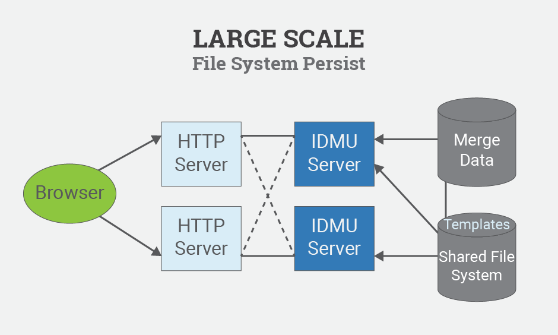
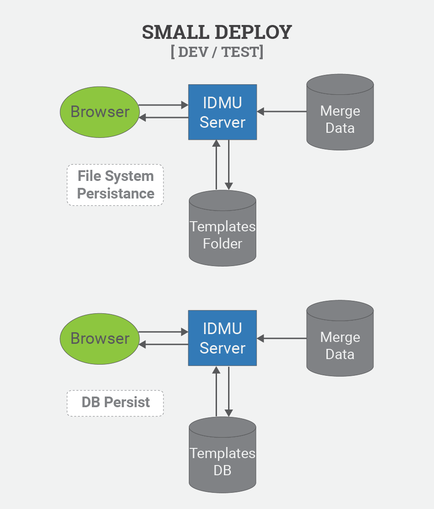

Copyright
2015, 2015 IBM
Licensed under the Apache License, Version 2.0 (the "License"); you may not use this file except in compliance with the License. You may obtain a copy of the License at http://www.apache.org/licenses/LICENSE-2.0. Unless required by applicable law or agreed to in writing, software distributed under the License is distributed on an "AS IS" BASIS, WITHOUT WARRANTIES OR CONDITIONS OF ANY KIND, either express or implied. See the License for the specific language governing permissions and limitations under the License.
The Java code has the following Open Source dependencies:
Maven Build Values
<dependencies>
<dependency>
<groupId>junit</groupId>
<artifactId>junit</artifactId>
<version>4.11</version>
<scope>test</scope>
</dependency>
<dependency>
<groupId>log4j</groupId>
<artifactId>log4j</artifactId>
<version>1.2.17</version>
</dependency>
<dependency>
<groupId>org.apache.commons</groupId>
<artifactId>commons-csv</artifactId>
<version>1.1</version>
</dependency>
<dependency>
<groupId>org.jsoup</groupId>
<artifactId>jsoup</artifactId>
<version>1.8.2</version>
</dependency>
<dependency>
<groupId>com.google.code.gson</groupId>
<artifactId>gson</artifactId>
<version>2.3.1</version>
</dependency>
<dependency>
<groupId>org.hibernate</groupId>
<artifactId>hibernate-core</artifactId>
<version>5.0.0.CR1</version>
</dependency>
</dependencies>
The IBM Data Merge Utility is an open source general purpose Java utility, exposed as an HTTP service, that uses Templates with your data source to create one or more merge output files. The merge process is driven by a set of directives associated with a template. The two types of directives are Replace and Insert and they drive the replacement of key values in a template, and the insertion of sub-templates. You can download source from GitHub here: https://github.com/FlatBallFlyer/IBM-Data-Merge-Utility
Current installation guides are maintained in the project GitHub wiki.
https://github.com/FlatBallFlyer/IBM-Data-Merge-Utility/wiki
Specific deployment guides can be found at:
Enterprise scale customers will want to deploy IDMU based on two clear use cases. The primary product use case is consumers accessing merge output through the idmu/merge rest api. In the production environment they templates are typically static configuration items that are subject to change control processes.
The secondary use case is that of the developer who creates and tests the templates to ensure they are producing the desired output. A typical development deployment will be a single server deployment with data source connections to test data. The template editor will be the primary user interface for this server, allowing template developers to create and test templates.
A typical production environment will implement a J2EE 3-tier architecture to meet scale and availability requirements. In addition, production environments typically secure the server to prevent any changes to the Templates.
See also Securing the server, Change Management
Large Deploy

Large Scale

Small Deploy

The configuration item that is migrated between the development and production environments is a Template Collection. To migrate a collection (or set of collections) between environments, you can utilize the following options:
- idmu/templatePackage GET and PUT rest calls.
HTTP GET http://devhost.com:8080/idmu/templatePackage/collections
to get a json package of the templates. You can then use that package with
HTTP PUT http://prodhost.com:8080/idmu/templatePackage
to put those templates to the new server
NOTE: If you have secured the server by enabling the secure-rest-services runtime parameter this call is prohibited. You can disable it temporarily or use one of the Persistence layer methods.
- File System persistence: Simply copy templates from your development server to the production server.
The new templates will go into effect when you issue a cache reset command to the server as in: http://server.com:8080/merge?DragonFlyCachReset
- Database persistence: Use the following scripts
- Export Templates: TBDM
- Import Templates: TBDM
- Move Templates: TBDM
The new templates will go into effect when you issue a cache reset command to the server as in: http://server.com:8080/merge?DragonFlyCachReset
Typical IDMU deployments want to secure templates in the Production environment to prevent accidental or malicious changes. The following steps will provide the most secure environment for production configurations:
During operation of the IDMU merge process archive output files are written to the directory specified by the merge-output-root runtime parameter. The design of your use case should download and then remove these files, and there should be a scheduled clean-up job to remove stale archives that were never downloaded. The following configurations can be helpful to accomplish this.
- Cron cleanup command:
TBDM
- Java Script to fetch and delete a file (Requires HTTP DELETE server support)
TBDM
- Apache Configuration to support HTTP DELETE command
TBDM
IDMU uses simple file system or database persistence of Templates and your traditional backup procedures should work without problem. All templates are cached at server startup so during normal operation there is no Template I/O to be interrupted.
Templates located in the folder specified by the merge-templates-folder runtime parameter should be backed up after new templates are moved into the environment. Regular backups of this folder is important for development environments.
Standard database backup process for the IDMU Template database will suffice. Template database I/O in a production environment is typically read only, and only at server startup or in response to a cache reset request.
Functional default values are provided for all configuration parameters. You can override these defaults in three locations.
- In the web.xml for the application, as init-param values for the Initialize servlet.
- As command line parameters passed to the JVM on startup.
The following configuration options can be specified:
- db-persist – This parameter is used to configure database persistence. The value “yes” enables database persistence of templates.
See: Installing a Template Database. The default value used if this parameter is not specified is “no”.
- jdbc-pools-properties-path – This parameter is used to specify the location of the database connection properties file. The value specified can be WEB-INF based or absolute.
The default used if this parameter is not specified is WEB-INF/properties/databasePools.properties. See: Configuring your data sources.
- log4j-config – This parameter is used to configure the path to a log4j properties file. The default used if ths parameter is not specified is WEB-INF/properties/log4j.properties.
- merge-templates-folder – This parameter specifies the path to the templates folder used by File System Persistence.
The value specified can be WEB-INF based or absolute. The java runtime user must have write access to this folder if template editing is enabled.
The default location used if this parameter is not specified is WEB-INF/templates
- merge-output-root – This parameter specifies the location where merge archive output is written to. This location will typically be accessable via an HTTP service.
Proper housekeeping of this folder is important. The default location used if this parameter is not specified is /tmp/merge
- pretty-json – This parameter is used to control “pretty” json formatting of the REST service returns. A value of “yes” enables pretty json. The default value used in this parameter is not specified is “no”.
- secure-rest-services – This parameter is used to disable the template save/delete rest services. This limits the Template Editor functionality to a read-only tool for viewing templates and secures the templates against any changes. See: securing your server.
IDMU supports JDBC database persistence of templates to provide support for a traditional J2EE 3-tier scale and availability architectures. To configure Database Template persistence follow these steps:
- Run the IDMU.sql sql script for your platform to create the template database and load the System templates. These files can be found at TBDM.
- Configure the TemplateDB data source in the database pools properties file.
- Configure the db-persist runtime parameter to “yes”
Create or edit the databasePools.properties file specified by the jdbc-pools-properties-path runtime parameter. See the databasePools-example.properties in the WEB-INF/properties folder for details.